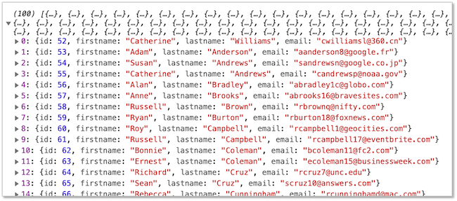
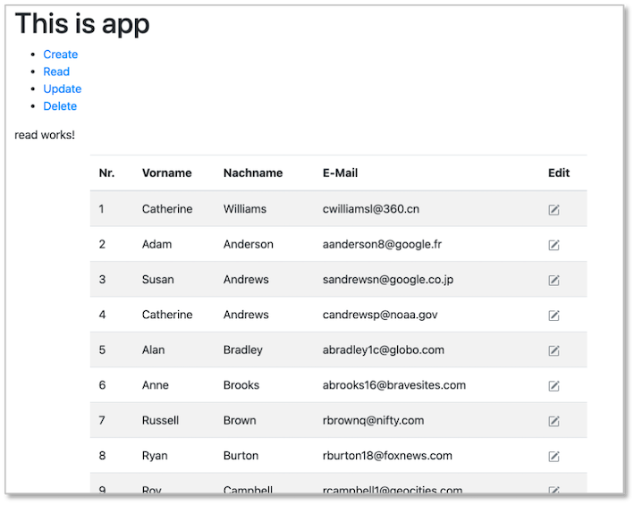
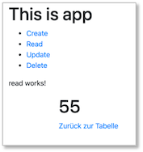
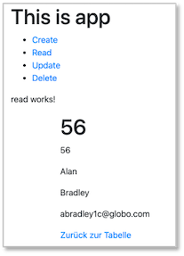
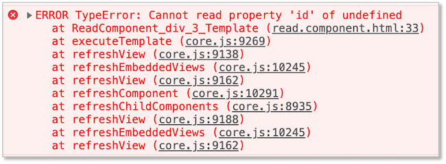
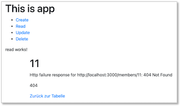
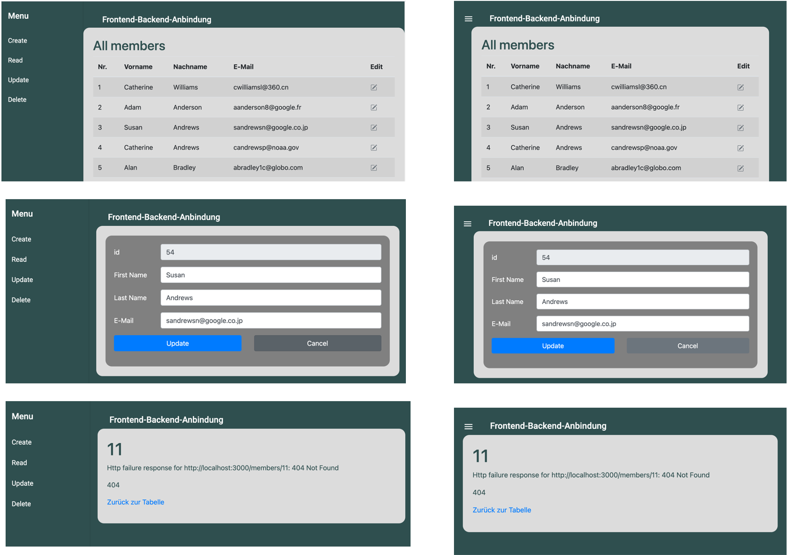
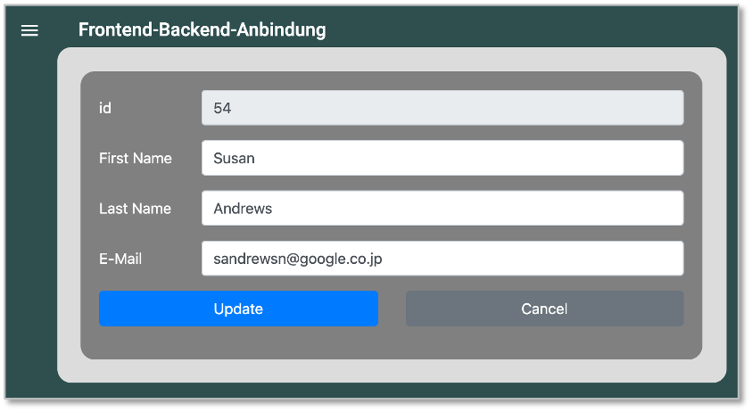

Anbindung an das Backend¶
Wir haben jetzt ein Backend, das als REST-Server funngiert. Über die Endpunkte der REST-API können wir auf die einzelnen Funktionen des Backends zugreifen, um die Daten in der MySQL-Datenbank zu manipulieren (erzeugen, lesen, ändern und löschen - CRUD). Unser Frontend stellt zur Zeit nur einen Daten-Service zur Verfügung, der die Daten client-seitig verwaltet. Dies wollen wir jetzt ändern. Das Frontend soll mit dem Backend kommunizieren, um die Daten zu nutzen, die das Backend zur Verfügung stellt.
Wir werden uns ein neues Frontend erstellen und dabei die einzelnen Schritte genauer untersuchen. Das hat folgende Vorteile:
- wir werden sicherer bei der Erstellung von Frontends mithilfe von Angular,
- wir müssen nicht auf bestehende Frontends aufsetzen, die evtl. bei einigen nicht richtig funktionieren,
- wir haben die Möglichkeit, tiefer in die Prinzipien von Angular einzutauchen und wesentliche Prinzipien ausführlicher zu diskutieren.
Ich werde das Frontend, das ich hier erstelle, frontend3 nennen. Der Name bleibt natürlich Ihnen überlassen. Wir erstellen uns also neben unserem alten Frontend, neben dem Backend usw. in unserem Repository mithilfe von
ng new frontend3
ein neues Angular-Projekt und wählen nicht die strikte Typüberprüfung, aber Routing und CSS.
Komponenten¶
Eine Angular-Anwendung besteht hauptsächlich aus Komponenten. Wann immer Sie eine neue "Unterseite" erstellen möchten oder sogar nur ein Menü, eine einzelne Tabelle o.ä., erstellen Sie sich eine neue Komponente. Jede Komponente besteht aus:
- einem HTML-Template, in dem mittels HTML bestimmt wird, was im Browser dargestellt werden soll (
*.component.html), - einer TypeScript-Klasse, in der das Verhalten auf der Seite definiert werden kann (
*.component.ts), - einem CSS-Selektor, mit dem bestimmt werden kann, wie die die Komponente in die Webseite eingebunden werden kann (z.B.
<app-root></app-root>), - einer CSS-Datei, in der eigene Styles für die Komponente definiert werden können (
*.component.css) und - einer Datei, in der Tests speizifiziert werden können (
*.component.spec.ts)
Die Erstellung von Komponenten erfolgt am einfachsten über das Terminal:
ng generate component nameDerKomponente
ng g c nameDerKomponente
Wir erstellen uns 4 Komponenten in unserer Anwendung:
ng g c members/create
ng g c members/read
ng g c members/update
ng g c members/delete
Diese 4 Komponenten CreateComponent, ReadComponent, UpdateComponent und DeleteComponent entstehen im Ordner members, der durch die erste Anweisung im src/app-Ordner erstellt wird.
Man könnte die Komponenten nun mithilfe ihrer Selektoren (z.B. <app-create></app-create>) in die Seite einbinden. Wir wählen jedoch gleich das Routing, um die jeweiligen Komponenten anzusprechen.
Routing¶
In der app-routing.module.ts können wir Routen definieren, so dass wir unsere Komponenten über die URLs direkt erreichen können, z.B. localhost:4200/read, um z.B. alle Datensätze auszulesen oder localhost:4200/read/11, um den Datensatz mit der id=11 auszulesen. Werden für die Komponenten Routen definiert, so wird je nach Route die jeweilige Komponente in den Selktor <router-outlet></router-outlet> eingesetzt.
Wir definieren unserer Routen wie folgt:
import { NgModule } from '@angular/core';
import { Routes, RouterModule } from '@angular/router';
import { CreateComponent } from './members/create/create.component';
import { UpdateComponent } from './members/update/update.component';
import { ReadComponent } from './members/read/read.component';
import { DeleteComponent } from './members/delete/delete.component';
const routes: Routes = [
{ path: 'create', component: CreateComponent },
{ path: 'update', component: UpdateComponent },
{ path: 'update/:id', component: UpdateComponent },
{ path: 'read', component: ReadComponent },
{ path: 'read/:id', component: ReadComponent },
{ path: 'delete', component: DeleteComponent },
{ path: 'delete/:id', component: DeleteComponent },
];
@NgModule({
imports: [RouterModule.forRoot(routes)],
exports: [RouterModule]
})
export class AppRoutingModule { }
Die Routen werden im routes-Array festgelegt. Bei Angabe der Komponenten, die über die jeweilige Route erreichbar sein soll, wird diese durch eine import-Anweisung importiert. Das Importieren sollten Sie durch Ihre IDE erledigen lassen.
Wichtig ist, dass die entsprechenden Links zu den Routen (und damit Komponenten) nicht über das Attribut href im HTML definiert werden, sondern über [routerLink]. Die Verwendung von href führt zu einem neuen Request auf dem Webserver. Die app.component.html sollte z.B. so aussehen:
<h1>This is app</h1>
<ul>
<li><a [routerLink]="['/create']">Create</a></li>
<li><a [routerLink]="['/read']">Read</a></li>
<li><a [routerLink]="['/update']">Update</a></li>
<li><a [routerLink]="['/delete']">Delete</a></li>
</ul>
<router-outlet></router-outlet>
In der app.component.html haben wir uns somit eine Liste erstellt und die einzelnen List-items sind Hyperlinks auf unsere Komponenten. Diese erreichen wir über die zuvor festgelegten Routen. Klicken wir nun auf einen Link, so wird die jeweilige Komponente in den <router-outlet></router-outlet>-Selektor unterhalb der Liste eingebunden. Nun erscheint die Liste von Links und wenn auf einen der Links geklickt wird, dann wird die entsprechende Komponente in den <router-outlet></router-outlet>-Selektor eingebunden. Da jedes der *.component.html ein <p>componentworks!</p> enthält, erscheint dieses dann unterhalb der Liste, so wie hier das Beispiel für die UpdateComponent:
Um Parameter aus den Routen auszulesen, z.B. die id aus localhost:4200/update/11, binden wir für genau dieses Beispiel (UpdateComponent) in die update.component.ts die Klasse ActivatedRoute ein und greifen dann darüber auf snapshot.paramMap.get('id')) zu. Die Datei sieht wie folgt aus:
1 2 3 4 5 6 7 8 9 10 11 12 13 14 15 16 17 18 | |
In Zeile 12 binden wir ActivatedRoute per dependency injection (siehe z.B. hier) in den Konstruktor ein. Die Eigenschaft route ist damit in der Klasse UpdateComponent verfügbar. Durch dieses Einbinden wird die Klasse ActiveRoute auch importiert (in Zeile 2). In Zeile 10 wird eine Eigenschaft selectedId deklariert, die den Typ number hat. Dieser Eigenschaft wird in Zeile 15 ein Wert zugewiesen, der aus der URL ausgelesen wird. Da wir unsere Rout ein app-routing.module.ts mittels { path: 'update/:id', component: UpdateComponent }, parametrisiert hatten, kann nun über die ActivatedRoute-Klasse (hier bei handelt es sich genauer um einen Service - siehe z.B. hier) der Wert von id ausgelesen werden. Dieser ist ein string, den wir mittels Number nach number konvertieren.
Bei der ngOnInit()-Funktion handelt es sich um einen sogenannten lifecycle-hook. Jede Komponente durchläuft einen Lifecycle. Wir können einerseits auf Ereignisse durch die Nutzerin reagieren und andererseits auf Ereignisse, die durch den Lifecycle einer Komponente ausgelöst werden. Bei ngOnInit() reagieren wir darauf, dass die Komponente initialisiert wird. Diese Funktion wird genau ein Mal aufgerufen (bei der Initialisierung der Komponente) - im Gegensatz z.B. zu ngOnChanges(). Diese Funktion wird bei jeder Änderung der Komponente aufgerufen, z.B. direkt vor ngOnInit(). Sie z.B. hier.
Interpolation¶
Mithilfe von Interpolation können wir (berechnete) Werte in unser HTML einfügen. Die Syntax von Interpolation sieht in Angular so aus:
{{ wert }}
Der Wert wird also in doppelten geschweiften Klammern angegeben. Wir betrachten für unsere obige UpdateComponent ein einfaches Beispiel. In update.component.ts haben wir die Eigenschaft selectedId erstellt und dieser mithilfe der parametrisierten Route einen Wert zugewiesen. Diesen Wert können wir nun in update.component.html durch Interpolation einbinden:
1 2 | |
Wenn wir also die update-Komponente über z.B. die URL localhost:4200/update/11 aufrufen, erscheint unterhalb des Absatzes update works! ein Absatz mit id=11.
Service für HTTP¶
Ehe wir weitere Sprachkonzepte in Angular betrachten, erzeugen wir uns einen Service, um mit dem Backend per HTTP zu kommunizieren. Ein Service in Angular ist eine (TypeScript-)Klasse, die einem konkreten Zweck dient. Ein Service sollte möglichst genau eine Sache erledigen. Ein Service kann typischerweise von allen/vielen Komponenten verwendet werden. Wir erstellen unseren Service deswegen in einem Ordner shared. Wir nennen unseren Service backend:
ng g service shared/backend
Durch die Anweisung wird der shared-Ordner erstellt und darin eine backend.service.ts. Ein Service besteht nur aus einer *.service.ts-Datei (und einer spec.ts für Tests). Es gibt dafür keine .html und keine .css-Datei, da ein Service nur ein Verhalten beschreibt und keine Sicht.
Als erstes fügen wir unserer app.module.ts das Modul HttpClientModule hinzu, um es zu importieren. Achten Sie darauf, dass das HttpClientModule in der Liste der Importe nach dem BrowserModule steht:
1 2 3 4 5 6 7 8 9 10 11 12 13 14 | |
Nun implementieren wir unseren BackendService. Wir fügen zunächst den HttpClient-Service per * dependency injection* hinzu:
1 2 3 4 5 6 7 8 9 10 | |
Mit dem HttpClient-Service sind wir in der Lage, Anfragen (requests) an das Backend zu senden und die Antworten (responses) zu empfangen und auszuwerten. Wir erinnern uns zunächst nochmal an die Endpunkte unserer REST-API:
| Methode | URL | Bedeutung |
|---|---|---|
| GET | /members | hole alle Datensätze |
| GET | /members/11 | hole den Datensatz mit der id=11 |
| POST | /members | füge einen neuen Datensatz hinzu |
| PUT | /members/11 | ändere den Datensatz mit der id=11 |
| DELETE | /members/11 | lösche den Datensatz mit der id=11 |
| DELETE | /members | lösche alle Datensätze |
Wir beginnen damit, den GET-request für alle members auszuführen. Dazu erstellen wir uns zunächst im Client ein Interface für das Datenmodell:
Datenmodell¶
Wir hatten uns früher bereits ein Datenmodell im Client erstellt. Wir wiederholen das hier nochmal schnell. Um das Mapping des Datenmodells von Backend und Frontend zunächst einfach zu halten, übernehmen wir das Datenmodell des Backends. Das Datenmodell in Angular ist ein Interface. Wir erstellen es ebenfalls im shared-Ordner:
ng generate interface shared/data
Anstelle von ng generate interface hätten wir auch ng g i schreiben können. Unser Datenmodell sieht wie folgt aus:
export interface Data {
id: number;
firstname: string;
lastname: string;
email: string;
}
Mit einem Interface legen wir in TypeScript einen neuen Typ an, hier den Typ Data. Interfaces dienen somit der Typsicherheit. Wir werden diesen Typ Data im folgenden verwenden, um die Datensätze unserer Mockup-Data zu typisieren. Interfaces können in TypeScript Eigenschaften und Funktionen enthalten. Für die Beschreibung unserer Daten benötigen wir nur Eigenschaften. Ein Objekt kann jetzt vom Typ Data sein. Ein Interface hat aber keinen Konstruktor.
get()-Funktion von HttpClient¶
Wir erstellen nun die erste "Verknüpfung" mit dem Backend und implementieren ein GET-Request an das Backend, um alle members abzufragen. Dazu verwenden wir die get()-Funktion des HttpClient-Services.
Die einfachste Form der Anwendung der get()-Funktion besteht darin, dieser Funktion die entsprechende URL des Backends zu übergeben. In unserem Fall also
http.get('http://localhost:3000/members');
Diese Funktion gibt ein sogenanntes Observable zurück. Observables implementieren das Observer Pattern - ein Design Pattern zur Kommunikation zwischen einem sogenannte subject, das einen oder mehrere observers beobachtet und das immer dann informiert wird, sobald sich der Zustand eines observers geändert hat. Eine typische Implementierung des Observer Patterns findet durch Ereignis-Listener statt. Jemand (das subject) meldet sich an einem observer an, z.B. einem Button (genauer gesagt, an das Click-Ereignis des Buttons) und wird informiert, sobald der Button gecklickt wurde.
Die Grundidee bei Observables in TypeScript ist die, dass es eine Funktion gibt, die Werte ermittelt (z.B. http.get()), aber diese Funktion nur ausgeführt wird, wenn sie jemand subscribed. subscribe() ist also wie eine Anmeldung an den zu beobachtenden Wert.
Wir schauen uns dieses Prinzip mal mit der get()-Funktion des HttpClients an:
1 2 3 4 5 6 7 8 9 10 11 12 13 14 15 16 17 | |
Zunächst einmal sehen wir in Zeile 15 den Aufruf der get()-Funktion von HttpClient. Der get()-Funktion wird als Parameter die URL des Backends übergeben. Diese ist in der Eigenschaft baseUrl in Zeile 10 definiert.
Die Rückgabe der get()-Funktion ist, wie gesagt, ein Observable. Wir erzeugen den Aufruf der get()-Funktion in einer von uns erstellten Funktion getAll()deren Rückgabetyp dieses Obervable ist (Zeile 14). Dieses Observable ist sogar typisiert, nämlich mit unserem Datenmodell-Typ Data. Vielmehr bekommen wir ein Array von Data-Objekten zurück, deshalb Observable<Data[]> als Rückgabetyp der getAll()-Funktion. Da wir diesen Rückgabetyp so konkret angeben (und nicht einfach nur Observable oder Observable<any>, erfordert TypeScript auch, dass wir die get()-Funktion typisieren - deshalb get<Data[]>().
Wir müssen sowohl Observable (aus rxjs) als auch Data (aus unserer data.ts) importieren (Zeilen 3 und 4). Nun müssen wir uns noch an dieses Observable mittels subscribe() anmelden. Das machen wir in unserer ReadComponent.
subscribe()¶
In unserer ReadComponent wollen wir die getAll()-Funktion unseres Backend-Services nutzen, um uns alle members-Datensätze vom Backend anbzufragen und anzeigen zu lassen. Wir öffnen dazu die read.component.ts:
1 2 3 4 5 6 7 8 9 10 11 12 13 14 15 16 17 18 19 20 21 22 23 24 | |
Zunächst binden wir den BackendService mittels dependency injection in unsere Komponente ein (Zeile 13). In einer eigenen Funktion readAll() rufen wir nun die getAll()-Funktion des BackendService auf (Zeile 20). Wie in dem Abschnitt zuvor erläutert, wird diese Funktion nur durch ein subscribe() ausgeführt. Die subscribe()-Funktion "holt" das Observer-Objekt, welches drei sogenannte callback-Funktionen definiert: next, error und complete. Callback-Funktionen sind hier erläutert. Wir haben also drei Parameter in der subscribe()-Funktion, von denen jedoch nur einer (next) erforderlich ist. error und complete sind optional. Wir verwenden hier auch nur next.
Unter next erhalten wir die response zurück, also das angefragte Objekt. Wir verwenden dafür eine Arrow-Funktion (siehe Arrow-Funktionen). Wie wir diese Funktion nennen, bleibt uns überlassen. Hier heißt sie response. Wir haben diese Funktion auch mit Data[] typisiert, da sie uns ein Data-Array zurückgibt. Der Inhalt dieser Funktion ist die Zuweisung der response auf unsere Eigenschaft members vom Typ Data[] (definiert in Zeile 11) und der Rückgabe der response (in Arrow-Funktionen kann aber auf das return verzichtet werden - siehe hier).
Hier vielleicht einmal zum Verständnis auch die Möglichkeit der Fehlerausgabe auf der Konsole:
this.cs.getAll().subscribe(
(response: Data[]) => this.members = response,
error => console.log(error)
);
Damit wir testen können, ob unsere Backend-Anbindung funktioniert, fügen wir noch eine Konsolen-Ausgabe der response ein. Die Funktionskörper der readAll()-Funktion sieht dann so aus:
this.cs.getAll().subscribe(
(response: Data[]) => {
console.log(response);
return this.members = response; },
error => console.log(error)
);
Backend starten¶
Um die Anbindung an das Backend zu testen, dürfen wir nicht vergessen, es zu starten! Wechseln Sie im Terminal in Ihren Backend-Ordner und rufen dort
node server.js
auf. Es erscheint im Terminal
Server is running on port 3000.
Successfully connected to the database.
Frontend starten¶
Wir müssen unser Frontend compilieren ng serve und wenn wir dann im Browser http://localhost:4200/read eingeben, also die Route zu unserer ReadComponent, dann sollten wir in der Konsole die Ausgabe der Response sehen (die ids und auch die Anzahl der Einträge können bei Ihnen anders sein):

Success
Wir haben das Backend an das Frontend angebunden. Wir haben die erste Anfrage an das Backend im Frontend umgesetzt, nämlich GET /members, indem wir im Frontend die get()-Funktion des HttpClient implementiert und diese in der ReadComponentmittels subscribe() ausgeführt haben. Wir werden nun zunächst die Daten noch im HTML-Template darstellen und dann weitere Endpunkte unserer REST-API anbinden.
read.component.html¶
Die Werte der Response wollen wir nun in unserem HTML-Template der ReadComponent darstellen. Nach Aufruf der ReadComponent über die /read-Route befinden sich die Werte in der Eigenschaft members vom Typ Data[]. Dieses Array lesen wir nun aus. Für das Auslesen von Arrays bieten sich in Angular Struktur-Direktiven an, hier insbesondere die Wiederholungsdirektive *ngFor:
1 2 3 4 5 | |
In Zeile 3 verwenden wir diese Direktive. Wir greifen auf members zu und laufen vollständig durch dieses Array. Dazu definieren wir uns eine Variable member (die können Sie nennen, wie Sie möchten). member zeigt dann jeweils auf einen Datensatz. Jeder Datensatz ist ein Objekt mit den Eigenschaften id, firstname, lastname und email. Mittels Interpolation lesen wir die Werte von member.firstname und member.lastname aus und stellen sie in einer Liste dar.
Bootstrap einbinden¶
Wir können dieses Mal ja Bootstrap in unser Angular-Frontend einbinden. Dazu gehen wir wie folgt vor. Wir wechseln im Terminal in unseren Frontend-Ordner und geben dort
npm install bootstrap jquery popper.js --save
ein. Würden wir nur npm install bootstrap eingeben, würden wir aufgefordert, jquery (siehe jQuery) und popper.js (siehe Popper) nachzuinstallieren.
In dem node_modules-Ordner in unserem Projekt entstehen die Ordner bootstrap, jquery und popper.js - können Sie sich in Ihrer IDE ja mal anschauen. Damit ist Bootstrap aber noch nicht ganz eingebunden. Wir müssen es noch in unsere angular.json eintragen:
25 26 27 28 29 30 31 32 33 | |
Beachten Sie, dass Sie die Eintragungen gleich zwei Mal in der angular.json vornehmen. Einmal unter architect --> build --> options und auch noch unter architect --> test --> options.
Testen Sie, ob Bootstrap eingebunden wurde, indem Sie für die Liste und die List-Items die Bootstrap-Klassen verwenden:
1 2 3 4 5 | |
Wir wollen noch eine weitere Struktur-Direktive betrachten, nämlich *ngIf. Bevor wir dies tun, installieren wir uns zunächst auch noch die Bootstrap-Icons.
Bootstrap Icons¶
Um die Bootstrap-Icons zu installieren, geben wir im Terminal in unserem Projektordner
npm i ngx-bootstrap-icons --save
ein. IN unserem node_modules-Ordner entsteht dadurch ein ngx-bootstrap-icons-Ordner. Diesen importieren wir folgt in die app.modules.ts:
1 2 3 4 5 6 7 8 9 10 11 12 13 14 15 16 17 18 19 20 21 22 23 24 25 26 27 28 29 30 31 32 33 34 35 | |
In Zeile 12 hätten wir auch alle verfügbaren Icons importieren können, dann mithilfe der Anweisung import { allIcons } from 'ngx-bootstrap-icons';. Dann hätten wir uns auch die Zeilen 14-16 sparen können, in denen wir explizit angeben, welche(s) Icon, wir verwenden können. Hätten wir alle Icons importiert, würde in Zeile 30 stehen NgxBootstrapIconsModule.pick(allIcons). Nähere Informationen dazu finden Sie hier.
Aus der Liste aller verfügbaren Icons haben wir (zunächst) nur das Icon pencil-square ausgewählt. Dieses Icon werden wir im folgenden verwenden. Die Verwendung des Icons innerhalb eines HTML-Templates sieht so aus:
<i-bs
name="pencil-square"
class="text-primary"
width="1em"
height="1em">
</i-bs>
In name geben Sie den Namen des Icons an, mit dem class-Attribut können Sie die Farbe setzen (siehe dazu Bootstrap-Colors) und mit den width- und height-Attributen setzen Sie die größe des Icons (hier die doppelte Schriftgröße). Alle Bootstrap-Icons und deren jeweilige Verwendung finden Sie hier.
Tabelle statt Liste¶
Wir ersetzen die Liste in der read.component.html durch eine Tabelle:
1 2 3 4 5 6 7 8 9 10 11 12 13 14 15 16 17 18 19 20 21 22 23 24 25 26 27 28 29 | |
Beachten Sie, dass wir der *ngFor-Direktive noch einen index hinzugefügt haben (Zeile 15). Damit wird jedem einzelnen Wert aus members (jedem Schleifendurchlauf) ein Index zugeordnet, beginnend bei 0. In der ersten Spalte der Tablle (Zeile 16) geben wir diesen jeweiligen Wert aus (erhöht um 1, um bei 1 anstelle von 0 zu beginnen). Über den index für die *ngFor-Direktive finden Sie hier weitere Informationen.
Beachten Sie außerdem, dass wir den Wert der *ngFor-Direktive um trackBy: trackByData erweitert haben. Dazu haben wir die Funktion in app.component.ts hinzugefügt:
25 26 27 28 29 | |
Dies erfolgt nur zur Performanzsteigerung. Haben wir lange Listen oder lange Tabellen, so wie hier, können geringfügige Veränderungen an Einträgen in diesen Listen oder Tabellen zu einer kompletten Neugestaltung des DOMs kommen - die gesamte Tabelle würde neu erstellt und dem DOM hinzugefügt werden. Um dies zu vermeiden, geben wir an, welche Einträge bereits enthalten - welche also bereits getracked werden. Wir geben dazu die Eigenschaft an, an der das Tracking identifiziert werden soll. Wir nutzen hier die id-Eigenschaft eines jeden members. Weitere Informationen zu trackby finden Sie hier.
Wie Sie sehen, verwenden wir in der letzten Spalte der Tabelle das Bootstrap-Icon pencil-square (Zeilen 21-26). Dieses Icon ist hier Inhalt eines <a>-Elementes, in dem ein routerLink angegeben wird. Dieser routerLink setzt sich aus der Route /read/ und der member.id zusammen. Der Datensatz mit der id=54 erzeugt dann z.B. die Route /read/54. Beachten Sie, dass wir in der app-routing.module.ts auch die parametrisierte Route read/:id definiert hatten und damit die ReadComponent aufrufen.
Parametrisierte Route in read.component.ts¶
Wir wollen nun dafür sorgen, dass wir auch in der ReadComponent den id-Parameter aus der URL auslesen. Das haben wir für die UpdateComponent bereits gemacht und wiederholen hier exakt die Schritte. Wir öffnen dazu die read.component.ts:
1 2 3 4 5 6 7 8 9 10 11 12 13 14 15 16 17 18 19 20 21 22 23 24 25 26 27 28 29 30 31 32 33 34 35 | |
Das heißt, wie binden per * dependency injection* den ActivatedRouted-Service ein (Zeile 15) und lesen in Zeile 18 den Wert des Parameters id aus der URL aus. Den Wert speichern wir in selctedId. Diese Eigenschaft haben wir in Zeile 13 der Klasse hinzugefügt.
Nun überlegen wir uns noch Folgendes: wenn wir die Route mit einer id aufrufen, also z.B. /read/ 11, dann wollen wir den einzelnen Datensatz mit der id=11 lesen. Nur, wenn wir die Route ohne id aufrufen, also nur /read, wollen wir alle Datensaätze lesen. Wird in der Route keine id angegeben, dann ist der Wert von selectedId=0. Wir wollen nur für diesen Fall die Funktion readAll() aufrufen, da wir nur für diesen Fall vom Backend alle Datensätze zur Verfügung gestellt bekommen möchten. In den Zielen 19-24 haben wir deshalb eine Selektion eingefügt, je nachdem, ob wir in der Route eine id angegeben haben (dann erfolgt eine Ausgabe auf der Konsole) oder nicht (dann rufen wir readAll() auf).
Was wir bis jetzt noch nicht haben, was wir aber in Kürze hinzufügen werden, ist der Request an das Backend nach einem einzelnen Datensatz. Zunächst wollen wir aber auch in unserem HTML-Template die Unterscheidung treffen, ob wir eine Route mit id aufgerufen haben oder nicht.
*ngIf in read.component.html¶
Wir mplementieren diese Fallunterscheidung in unserem HTML-Template. Was wir wissen ist, dass selectedId einen Wert größer als 0 hat , wenn wir eine Route /read/xx aufgerufen haben und selectedId hat den Wert 0, wenn wir nur die Route /read aufgerufen haben. Diese Unterscheidung fügen wir in read.component.html ein:
1 2 3 4 5 6 7 8 9 10 11 | |
Wir fügen zwei <div>-Elemente hinzu. Das eine <div>-Element umschließt die Tablle. Das andere <div>-Element enthält eine Überschrift, deren Inhalt der Wert von selectedId ist, sowie einen routerLink, der uns zurück zu /read führt (dann also ohne eine id).
Das erste <div>-Element wird nur dann angezeigt, wenn der Wert von selectedId gleich 0 ist. Das ergibt sich aus der Struktur-Direktive *ngIf="selectedId == 0". Das zweite <div>-Element wird nur dann angezeigt, wenn der Wert von selectedId größer als 0 ist. Das ergibt sich aus der Struktur-Direktive *ngIf="selectedId > 0".
Wenn wir nun im Browser http://localhost:4200/read eingeben, erscheint folgende Ansicht:

Wenn wir dann auf einen der Icons in der rechten Spalte klicken, z.B. auf den Eintrag mit der id=55, dann wird im Browser die URL http://localhost:4200/read/55 aufgerufen und es erscheint diese Ansicht:

Mit der *ngIf-Direktive können wir also HTML-Elemente unter bestimmten Bedingungen hinzufügen bzw. verschwinden lassen. Eine ausführliche Beschreibung von *ngIf finden Sie z.B. hier.
R - read one (z.B. 'GET /members/11')¶
Wir haben den Zugriff auf das Backend für den Endpunkt /members unter Verwendung der GET-Methode implementiert. Jetzt wollen wir einen einzelnen Datensatz anfordern. Das Backend stellt diesen unter GET /members/:id zur Verfügung (siehe R - read one). Wir ergänzen also zunächst unseren BackendService um eine getDataById(dataId: number)-Funktion, der wir die id eines Datensatzes übergeben. Auch diese Funktion gibt wieder ein Observable zurück. Im Gegensatz zur getAll()-Funktion wird dieses Mal das Observable aber mit Data typisiert, da wir nur einen Datensatz zurückbekommen. An die baseUrl hängen wir die id, nach der wir suchen, um im Backend eine GET baseUrl/id-Anfrage zu stellen. Die Funktion in backend.service.ts sieht so aus:
1 2 3 4 5 6 7 8 9 10 11 12 13 14 15 16 17 18 19 20 21 22 23 | |
Diese Funktion können wir nun in unserer read.component.ts verwenden. Dort hatten wir ja bereits in der ngOnInit()-Funktion die Fallunterscheidung, ob die Route mit einem id-Parameter aufgerufen wird (dann hat selectedId einen Wert größer als 0) oder ohne id-Parameter (also nur /read - dann rufen wir die readAll()-Funktion auf und geben die Tabelle aus).
Wir ergänzen die read.component.ts zunächst um eine readOne(id: number)-Funktion, die die getDataById(id) des BackendService subscribed und rufen diese dann für den Fall auf, dass die /read-Route parametrisiert ist:
1 2 3 4 5 6 7 8 9 10 11 12 13 14 15 16 17 18 19 20 21 22 23 24 25 26 27 28 29 30 31 32 33 34 35 36 37 38 39 40 41 42 43 44 | |
In Zeile 25 wird die readOne()-Funktion aufgerufen für den Fall, dass selectedId ungleich 0 ist (also nicht die Tabelle aller Datensätze angezeigt werden soll). Dieser Funktion wird der Wert von selectedId übergeben (den wir aus der URL ausgelesen haben, also z.B. http://localhost:4200/read/11).
In den Zeilen 38-43 sehen wir die Definition der readOne()-Funktion. Es wird die getDataById()-Funktion des BackendService subscribe() und die response(vom Typ Data) in die neu hinzugefügte (Zeile 13) Eigenschaft member gespeichert.
Im nächsten Schritt lassen wir die Werte von member in unserem HTML-Template mittels Interpolation ausgeben:
1 2 3 4 5 6 7 8 9 10 11 12 13 14 15 | |
In den Zeilen 10-13 lassen wir alle Werte von member auf der Seite in jeweils <p>-Elementen anzeigen.
Wir probieren aus und rufen im Browser http://localhost:4200/read auf. Es erscheint die Tabelle aller Datensätze. Wir klicken auf eines der Icons in der Edit-Spalte der Tabelle. Die URL im Browser ist nun parametrisiert, z.B. http://localhost:4200/read/56 und es erscheint:

Das sieht gut aus und alles scheint zu funktionieren! Wenn wir uns aber die Konsole in den Entwicklertools dabei anschauen, dann stellen wir fest, dass ein Fehler erscheint:

Das Problem ist, dass versucht wird, die Komponente darzustellen (zu rendern), noch bevor ("parallel" dazu) die readOne()-Funktion fertig ausgeführt ist und die response in member gespeichert hat. Das Rendern der Webseite erfolgt nebenläufig zur asynchronen Ausführung der subscribe()-Funktion in readOne(). Das ist einerseits ein sehr nützliches Feature, denn die Darstellung der Webseite wird nicht dadurch aufgehalten, dass eine Funktion noch ausgeführt wird. Der asynchrone Ansatz ist ausgesprochen nutzerfreundlich! Sobald der Wert existiert, wird er auch dargestellt - deshalb erscheint unsere Webseite auch fehlerfrei.
Safe navigation operator¶
Um zu vermeiden, dass versucht wird, eine Wert über Interpolation darzustellen, der noch gar nicht existiert (undefined ist), kann der sogenannte safe navigation operator verwendet werden. Das Prinzip dieses Operators entspricht einer *ngIf-Direktive. Erst wenn der Wert ungleich undefined ist, wird er dargestellt. Die Syntax des safe navigation operators ist ein ?:
objekt?.eigenschaft
Solange objekt noch undefined ist, wird nicht auf die (noch nicht existierende) eigenschaft zugegriffen. Wir fügen den safe navigation operator in die read.component.html ein:
31 32 33 34 35 36 37 38 | |
Jetzt haben wir auch in der Konsole keinen Fehler mehr, da der Zugriff auf member.id gar nicht versucht wird, solange member === undefined.
Error - Datensatz existiert nicht¶
In der readAll()-Funktion haben wir uns um einen Fehlerfall nicht weiter gekümmert. Für den Fall eines Fehlers geben wir den Fehler einfach auf der Konsole aus. Die derzeitige Implementierung von readOne() ist ebenso. Allerdings kann es bei readOne() ja ohne Probleme vorkommen, dass wir keinen Datensatz zurückbekommen, sondern einen Fehler, nämlich dann, wenn der Datensatz mit der angegebenen id gar nicht existiert. Angenommen, wir rufen im Browser http://localhost:4200/read/12345 auf, dann gibt es in der Datenbank keinen Datensatz mit der id=12345. Einen solchen "Fehler" sollten wir nun behandeln.
Wir wiederholen nochmal die drei Parameter der subscribe()-Funktion:
nextgibt die Daten zurück, wenn es möglich ist (response)errorgibt einen Fehler zurück, falls er auftrittcompletedbei erfolgreicher Response, nutzen wir nicht
Sowohl bei der readAll()- als auch bei der readOne()-Methode haben wir uns die response in einer eigenen Eigenschaft gespeichert (members bzw. member). Das wollen wir nun auch für einen Fehler machen. Wir fügen eine Eigenschaft error in unsere Klasse ein. Diese ist vom Typ HttpErrorResponse. Ein HttpErrorResponse-Objekt hat zwei wesentliche Eigenschaften: message und status. Wir erweitern zunächst die read.component.ts und die Eigenschaft error und belegen diese im Fehlerfall mit dem HttpErrorResponse-Objekt:
1 2 3 4 5 6 7 8 9 10 11 12 13 14 15 16 17 18 19 20 21 22 23 24 25 26 27 28 29 30 31 32 33 34 35 36 37 38 39 40 41 42 43 44 45 46 | |
Wir haben nur zwei Zeilen geändert. In Zeile 16 ist die Eigenschaft error hinzugefügt worden und in Zeile 43 erfolgt die Ausgabe des Fehlers nicht mehr auf der Konsole, sondern der Fehler (das HttpErrorResponse-Objekt) wird in this.error gespeichert.
Wir passen nun auch noch die read.component.html an, um den Fehlerfall auszugeben. Dazu nutzen wir die *ngIf-Direktive:
31 32 33 34 35 36 37 38 39 40 41 42 43 44 | |
Für den Fall, dass ein Fehler aufgetreten ist (Zeile 33), werden die error.message und der error.status ausgegeben. Für den Fall, dass es einen member gibt (also kein Fehler aufgetreten ist), werden die Eigenschaften von member ausgegeben.
Wir testen die Ansicht durch Aufruf einer URL im Browser, die als id einen Wert verwendet, der nicht in der Datenbank enthalten ist. Bei mir z.B. http://localhost:4200/read/11. Das Ergebnis sieht dann so aus:

Success
Wir haben jetzt auch die GET /members/id-Anfrage an das Backend umgesetzt, d.h. wir können uns jetzt einen einzelnen Datensatz vom Backend zurückgeben lassen und diesen verarbeiten. Wir haben außerdem den safe navigation operator kennengelernt, der es erlaubt, erst dann auf Eigenschaften eines Objektes zuzugreifen, wenn das Objekt vollständig geladen ist. Außerdem haben wir den Fehler behandelt, der auftreten kann, falls die angefragte id in der Datenbank gar nicht existiert und somit kein Datensatz zurückgeliefert wird. Nun kümmern wir uns um den Fall, dass vom Client Daten an das Backend gesendet werden, z.B. um ein Update eines Datensatzes durchzuführen (PUT /members/id).
Formular für einen Datensatz¶
Bevor wir uns um das Update eines Datensatzes kümmern, machen wir unser Frontend noch ein bisschen schicker. Die Anzeige aller Datensätze in einer Tabelle ist bereits okay (man könnte hier noch Paginierung und Sortierung hinzufügen). Wenn wir in der Tablle auf ein Edit-Icon klicken, dann mit dem Ziel, diesen Datensatz zu ändern. Wir werden deshalb die /read/id-Ansicht so ändern, dass der Datensatz in ein Formular eingefügt wird.
Formulare werden verwendet, um Nutzereingaben zu ermöglichen und die eingegebenen Daten zu verwalten, sie z.B. in einer Datenbank zu speichern. In Angular gibt es zwei verschiedene Ansätze, Forumlare zu erstellen:
- reaktive Formulare werden in der TypeScript-Klasse konzipiert und basieren auf einem unveränderlichen Datenmodell. Sie sind leichter zu skalieren als Template-basierte Formulare und besser wiederzuverwenden. Sie sind prinzipiell den Template-basierten Formularen vorzuziehen, außer dass Formular ist sehr einfach und besteht z.B. nur aus einem einzigen Eingabefeld.
- Template-basierte Formulare basieren auf Direktiven im HTML. Sie sind sehr einfach zu erstellen (direkt im HTML), können aber weniger einfach evaluiert und getestet werden und sind für strukturierte (verschachtelte) Datenmodelle ungeeignet.
Für weitere Informationen zu Formularen in Angular siehe hier.
Die beiden wesentlichen TypeScript-Klassen bei Formularen sind
FormControlfür ein einzelnes Steuerelement (z.B. eininputoder einradioButton) undFormGroupfür eine zusammenhängende Menge von Steuerlementen (einem Formular).
Damit unsere ReadComponent nicht zu überladen wird, erstellen wir für das Formular eine eigene Komponente. Diese Komponente wird eine Kindkomponente der ReadComponent. Wir erstellen die neue FormComponent deshalb in den Ordner der ReadComponent:
ng g c members/read/form
In der form.component.ts erstellen wir zunächst mithilfe des FormBuilders das Formular:
1 2 3 4 5 6 7 8 9 10 11 12 13 14 15 16 17 18 19 20 21 22 23 24 25 | |
Wir nennen das Formular form. Es ist vom Typ FormGroup (Zeile 10). Mithilfe der group()-Funktion des FormBuilder erstellen wir uns die vier FormControl-Elemente idControl, firstNameControl, lastNameControl und emailControl (Zeilen 13-21). Sie haben zunächst keinen Wert (kein value, sind also zunächst leer) und die Eingabe in die jeweiligen Felder soll überprüft werden (Validators.required). Diese FormGroup wird in unsere Eigenschaft form gespeichert. form kann man als Name unseres Formulars auffassen.
Das HTML-Template des Formulars könnte wie folgt aussehen (Verwendung von Boostrap-Klassen):
1 2 3 4 5 6 7 8 9 10 11 12 13 14 15 16 17 18 19 20 21 22 23 24 25 26 27 28 29 30 31 32 33 34 35 36 37 38 | |
In Zeile 3 erfolgt durch [formGroup]="form" ein sogenantes property binding, d.h. eine Eigenschaft (ein Attribut) des <form>-Elementes wird an einen Wert aus der zugehörigen TypeScript-Klasse gebunden. Uns genügt es, das gesamte Forumlar form an die gesamte FormGroup zu binden. Falls Sie einzelne Werte aus den Formularen einzeln auswerten möchten, können Sie die einzelnen FormControl-Elemente auch in den einzelnen <input>-Elementen mittels z.B. [formControl]="firstNameControl" binden. Siehe dazu z.B. hier.
Einbinden der FormComponent in die ReadComponent¶
Wir binden die FormComponent über den Komponentenselktor der FormComponent in die ReadComponent ein. Dies erfolgt für den Fall, dass die selectedId der ReadComponent größer als 0 ist (wir also nicht alle Datensätze in der Tabelle ausgeben, sondern nur genau einen Datensatz) und darin für den Fall, dass wir keinen error haben (also keinen entsprechenden Datensatz gefunden):
37 38 39 40 41 42 43 44 | |
Wir könnten die Liste der <p>-Elemente an dieser Stelle auch schon vollständig durch das Formular ersetzen. An die Stelle des Komponentenselektors <app-form></form>app-form> wird das Formular eingefügt. Es wird jetzt auch bereits angezeigt. Öffnen Sie dazu im Browser unter der URL http://localhost:4200/read und klicken Sie auf einen Edit-Icon in der rechten Spalte.
Datenfluss von Eltern- nach Kindkomponente¶
In der Elternkomponente ReadComponent sind die Daten des Datensatzes, der im Formular angezeigt werden soll, unter der Eigenschaft member verfügbar. Die Frage ist nun, wie diese Daten von der Eltern- auf die Kondkomponente übertragen werden können. Dazu werden zwei Konzepte verwendet:
- In der Kindkomponente ( der
*.tsder Kindkomponente) wird mithilfe des@Input()-decorators eine Eigenschaft der Kindkomponente festgelegt, in die die Daten der Elternkomponente aufgenommen werden sollen. Wir werden dazu die Anweisung@Input() data: Data;unserer Kindkomponente (derFormComponent) hinzufügen. - In der Elternkomponente (der
*.htmlder Elternkomponente) werden mithilfe von property binding dem Komponentenselktor der Kindkomponente die Daten übergeben. Wir werden deshalb den Aufruf des Komponentenselektors in derreadComponenterweitern um<app-form [data]="member"></app-form>, d.h. die Eigenschaftdatader Kindkomponente bekommt den Wert der Eigenschaftmemberder Elternkomponente übergeben.
Die generelle Syntax der property binding an den Kindselektoren sieht so aus:
<app-child> [childProperty]="parentProperty" </app-child>
wobei in der child.component.ts definiert sein muss:
@Input() childProperty: Typ;
Wir erweitern also unsere form.component.ts (unsere Kindkomponente) um:
1 2 3 4 5 6 7 8 9 10 11 12 13 14 15 16 17 | |
und die read.component.html um
42 | |
Weitere Informationen zum Datenfluss von der Eltern- auf die Kindkomponente finden Sie hier.
Nun können können wir die Werte in unser Formular einfügen. Um die Werte in das Formular einzutragen, bietet die Klasse FormGroup zwei Funktionen an:
setValue()- setzt für alleFormControl-Elemente innerhalb derFormGroupeinen Wert (value)patchValue()- kann allen oder bestimmten (einzelnen)FormControl-Elementen einen Wert (value) zuweisen.
Wir verwenden patchValue(), Sie können aber auch setValue() ausprobieren:
26 27 28 29 30 31 32 33 | |
Wenn Sie jetzt den Browser öffnen, sollten die entsprechenden Werte in das Formular eingetragen sein.
Ereignisse zum Formular hinzufügen¶
Wir fügen dem Formular noch zwei Ereignisse hinzu. Das eine Ereignis (submit) wird ausgelöst, wenn das Formular versendet wird, also auf den submit-Button gedrückt wird. Das andere Ereignis hängen wir an den cancel-Button. Wir fügen die Ereignisse in der form.component.html hinzu:
1 2 3 4 5 6 7 8 9 | |
Um sich an das submit-Ereignis anzumelden, wird für das <form>-Element (ngSubmit) hinzugefügt und als dessen Wert die Funktion, die aufgerufen werden soll, beim Absenden des Formulars - hier die Funktion onSubmit() (die wir gleich noch in form.component.ts einfügen werden). Für den Cancel-Button melden wir uns an das click-Ereignis mithilfe von (click) und der Angabe der Funktion, die ausgeführt werden soll (hier cancel()) an.
Jetzt müssen noch die beiden Ereignisbehandlungsfunktionen in die form.component.ts eingefügt werden. In der Funktion onSubmit() geben wir zunächst nur alle Werte auf die Konsole aus, die in den <input>-Elementen beim Absenden des Formulars standen. Wir werden diese Funktion in den folgenden Abschnitten ausbauen.
In der Funktion cancel() wollen wir zurück zur Tabelle wechseln (also alle Datensätze anzeigen) und das Formular nicht absenden. Dazu verwenden wir die Klasse Location und deren Funktion back(). Die Funktion back() wirkt genauso als würden wir im Browser in der Browserhistorie zurückblättern. Weitere Information zur Klasse Location finden Sie hier.
1 2 3 4 5 6 7 8 9 10 11 12 13 14 15 16 17 18 19 20 21 22 23 24 25 26 27 28 29 30 31 32 33 34 35 36 37 38 39 40 41 42 43 | |
Wenn Sie nun auf den Button Update klicken, dann erscheinen alle Werte aus dem Formular als ein JSON auf der Konsole. Beachten Sie, dass alle Felder ausgefüllt sein müssen. Sobald ein input-Feld leer ist, ist der Button Update deaktiviert. Das id-Feld ist readonly und kann nicht verändert werden. Wenn Sie auf den Cancel-Button klicken, gelangen Sie zurück zur Tabelle.
Success
Wir haben uns ein reaktives Formular in einer Kindkomponente erstellt und haben Daten von der Eletern- auf die Kindkomponente fließen lassen. Außerdem haben wir dem Formular zwei Ereignisse hinzugefügt. Jetzt wäre es Zeit, die Anwendung ein wenig aufzuräumen und die Darstellung zu verbessern. Beispielsweise könnten Sie jetzt eine Navigations-Komponente hinzufügen (wie in Übung 6) und alle unnötigen Ausgaben aus den HTML-Templates herausnehmen.
Die Anwendung könnte jetzt z.B. so aussehen (je nachdem, ob und wie Sie sie noch gestaltet haben):

Den vollständigen Code für diesen Abschnitt (bis hier her) finden Sie hier.
U - update¶
Wenn wir das Formular für einen einzelnen Datensatz angezeigt bekommen (z.B. http://localhost:4200/read/54):

, dann mit dem Ziel, Daten in diesem Datensatz zu ändern und die Änderungen zu speichern. Das heißt, wir wollen ein update durchführen. Siehe im Backend dazu U - update. Zuvor schauen wir uns aber noch das allgemeine Prinzip dafür an, Daten von der Kindkomponente an die Elternkoponente zurückzugeben, denn wir haben die Daten des Formulars ja in der FormComponent, die innerhalb der ReadComponent eingebunden wurde. Der Datenfluss von Eltern- auf Kindkomponente wurde bereits hier erläutert. Nun sollen die Daten andersherum fließen, also von der Kind- zur Elternkoponente.
Datenfluss von Kind- nach Elternkomponente¶
Die form.component.ts (also die TypeScript-Klasse der Kindkomponente) sieht bis jetzt so aus:
src/app/members/read/form.component.ts
import {Component, Input, OnInit } from '@angular/core';
import {FormBuilder, FormGroup, Validators} from '@angular/forms';
import { Data } from '../../../shared/data';
import { Location } from '@angular/common';
@Component({
selector: 'app-form',
templateUrl: './form.component.html',
styleUrls: ['./form.component.css']
})
export class FormComponent implements OnInit {
@Input() data: Data;
form: FormGroup;
constructor(private fb: FormBuilder, private location: Location) {
this.form = this.fb.group(
{
idControl: ['', Validators.required],
firstNameControl: ['', Validators.required],
lastNameControl: ['', Validators.required],
emailControl: ['', Validators.required],
}
);
}
ngOnInit(): void {
this.form.patchValue({
idControl: this.data?.id,
firstNameControl: this.data?.firstname,
lastNameControl: this.data?.lastname,
emailControl: this.data?.email
});
}
onSubmit(): void {
// TODO: Use EventEmitter with form value
console.warn(this.form.value);
}
cancel(): void {
this.location.back();
}
}
Die onSubmit()-Funktion wird aufgerufen, wenn wir den Update-Button in unserem Formular klicken. Wir erweitern diese Klasse nun derart, dass die Daten aus dem Formular (this.form.value) an die Elternkomponente (ReadComponent) geleitet werden, damit sie von dort aus an das Backend für das update übertragen werden können.
Dazu erweitern wir zunächst form.component.ts:
1 2 3 4 5 6 7 8 9 10 11 12 13 14 15 16 17 18 19 20 21 22 23 24 25 26 27 28 29 30 31 32 33 34 35 36 37 38 39 40 41 42 43 44 45 46 47 48 | |
In Zeile 1 importieren wir nun auch noch Output und EventEmitter. Außerdem fügen wir in Zeile 13 eine weitere Eigenschaft updateEvent vom Typ EventEmitter hinzu. Diese dekorieren wir mit @Output und geben damit an, dass der Wert dieser Eigenschaft von der Kind- an die Elternkomponente übertragen wird. In Zeile 42 verwenden wir den EventEmitter updateEvent und rufen dafür die emit()-Funktion auf. Damit wird das Ereignis updateEvent ausgelöst. Wir übergeben diesem Ereignis data vom Typ Data. Die einzelnen Werte von data werden in den Zeilen 38-41 aus den Werten aus dem Formular (values = form.value) gesetzt. Weitere Informationen zu EventEmitter finden Sie hier.
In der Elternkomponente, der ReadComponent fügen wir zwei Sachen hinzu:
- in der
read.component.tswird die Ereignisbehandlung desupdateEventshinzugefügt und - in der
read.component.htmlfügen wir ein property bindung zum Komponentenselektor der Kindkomponente hinzu
1 2 3 4 5 6 7 8 9 10 11 12 13 14 15 16 17 18 19 20 21 22 23 24 25 26 27 28 29 30 31 32 33 34 35 36 37 38 39 40 41 42 43 44 45 46 47 48 49 50 51 52 | |
1 2 3 4 5 6 7 8 9 10 11 12 13 14 15 16 17 18 19 20 21 22 23 24 25 26 27 28 29 30 31 32 33 34 35 36 37 38 39 40 | |
In der read.component.ts wurde in den Zeilen 47-51 also einfach eine update-Funktion hinzugefügt, welche somit eine weitere Eigenschaft der TypeScript-Klasse der ReadComponent ist. In dieser Funktion wird zunächst die update-Funktion des BackendService aufgerufen (erstellen wir gleich) und danach die Route /read - also das Anzeigen aller Datensätze in der Tabelle. In der read.component.html wurde der Komponentenselektor <app-form></app-form> um ein weiteres Attribut erweitert. Nachdem wir dort bereits mithilfe der property binding [data]="member" den Datenfluss von der Eltern- auf die Kindkomponente spezifiziert hatten, kommt nun ein Ereignis-Attribut hinzu. Wir binden das updateEvent der Kindklasse an das update-Event der Elternklasse. Die generelle Syntax sieht so aus:
Die generelle Syntax der property binding an den Kindselektoren sieht so aus:
<app-child> (childEvent)="parentMethod($event)" </app-child>
wobei in der child.component.ts definiert sein muss:
@Output() childEvent: EventEmitter;
sowie die parentMethod() in der parent.component.ts.
Mithilfe der Banana-Syntax [()] können @Input und @Output übrigens kombiniert werden. Siehe dazu two way binding.
In der (Eltern-)Komponente read.component.ts kommen jetzt bei Klicken des Buttons Update die Werte aus dem Formular an. Diese werden nun verwendet, um die update-Funktion im Backend aufzurufen und den Datensatz zu aktualisieren. Dazu erweitern wir den BackendService um eine update-Funktion:
1 2 3 4 5 6 7 8 9 10 11 12 13 14 15 16 17 18 19 20 21 22 23 24 25 26 27 28 29 30 31 32 33 34 35 36 37 | |
Die put-Funktion des HttpClient (siehe z.B. hier) erzeugt ein Observable, das mithilfe der subscribe()-Funktion ausgeführt werden kann. Subscribe() hat zwei Parameter next und error und für beide kann eine Callback-Funktion definert werden. Die hier definierten Funktionen geben nur entweder die response oder den error auf die Konsole aus.
Damit kann nun auch ein Datensatz geändert werden (update) - siehe U - update im Backend. Beachten Sie, dass wir hier weder eine Meldung des erfolgreichen Updates implementiert haben, noch eine eventuelle Fehlermeldung. Für beides wäre die UpdateComponent geeignet. Wir leiten aber direkt nach dem Update an die Tabelle aller Datensätze weiter.
D - delete one¶
Um einen Datensatz zu löschen, könnten wir in der Übersicht aller Datensätze, also in der Tabelle unter der Route /read eine weitere Spalte mit einem entsprechenden Icon hinzufügen.
ng add @ng-bootstrap/ng-bootstrap